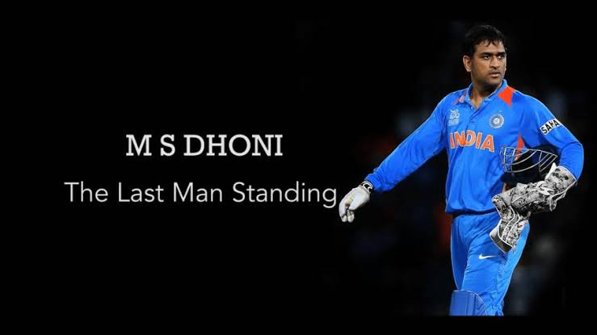

One of the greatest captains in cricket history who inspired millions with calm leadership, fearless decisions, and unmatched finishing ability.
Explore Journey
Mahendra Singh Dhoni was born on 7 July 1981 in Ranchi, Jharkhand. He made his international debut in 2004 and quickly became one of India's most dependable wicketkeeper-batsmen. His calm mindset under pressure earned him the nickname "Captain Cool."
Under his leadership, India achieved historic victories and reached the top of world cricket. Dhoni's ability to finish matches and make fearless decisions continues to inspire players around the world.
International debut against Bangladesh.
Led India to the inaugural ICC T20 World Cup victory.
Won the ICC Cricket World Cup with his iconic finishing six.
Won the ICC Champions Trophy, becoming the only captain to win all ICC white-ball trophies.
Announced retirement from international cricket.
ICC T20 World Cup Champion
ICC Cricket World Cup Champion
ICC Champions Trophy Champion
Multiple IPL titles as Chennai Super Kings captain.
"You don't play for the crowd, you play for the country."
MS Dhoni's influence extends far beyond cricket. His leadership, humility, discipline, and ability to stay calm under pressure have made him a role model for millions. Even after retiring from international cricket, his legacy continues through the players he inspired and the countless fans who admire his dedication and sportsmanship.